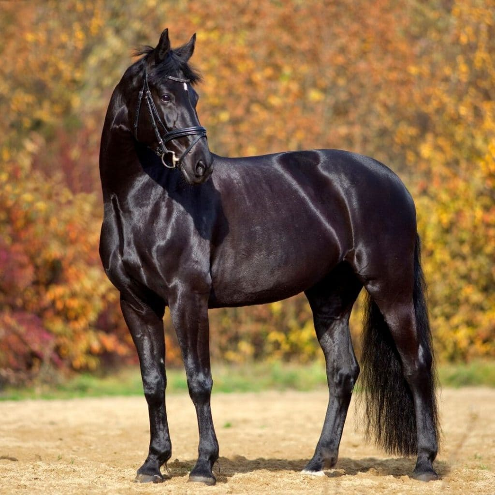
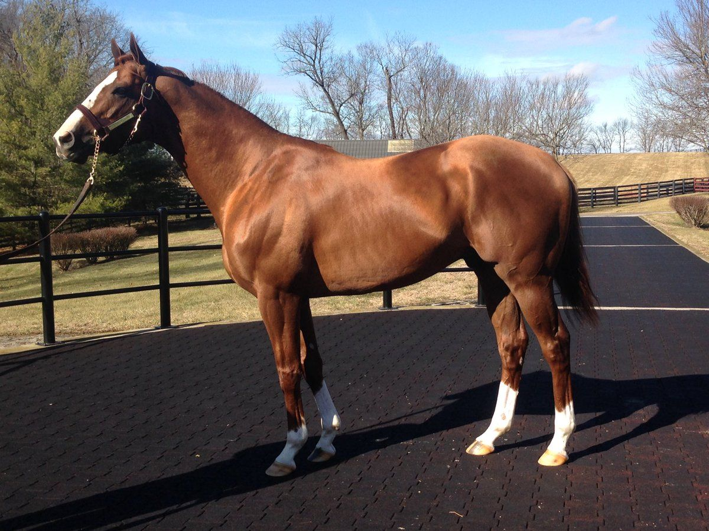
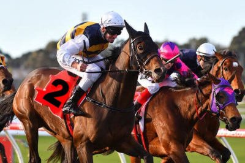

TRUSTWORTHY AND PROVEN
Bright Futures Farm has been a trusted 501(c)(3) charity since 2000. We are accredited by the Thoroughbred Aftercare Alliance (TAA) and have been since 2014. Being accredited by TAA means that we have proven, through independent documentation, that we are a transparent organization, use our funds wisely and provide excellent care to the horses at our facility. The TAA inspects our books and our facility several times a year. 
We receive no funding from state or federal agencies. We rely solely on YOUR donations for support. Your financial support provides the food, supplements and care each horse here needs to stay healthy in their golden years, and most of our seniors live well into their thirties because of the care that you help provide.
HELP US DO WHAT WE DO BEST AND GIVE THE GIFT OF LIFE
Making a donation will allow us to continue to do what we do best…save horses that are suffering, abused, and neglected and provide long-term care to the very senior permanent residents that call BFF home. The horses we rescued from the hanging barn in 2016 were with us just five months. Because of their dire condition, it cost over $18,000 to make them healthy again. Medical expenses for the six horses from the hanging barn alone were over $10,000 and funds raised for their care totaled $8,500…well short of what was needed. 
Better yet, would you like to become a monthly sponsor of one of our seniors? The DONATE button below will allow you to make a one-time donation of any amount, or sign up to be a monthly sponsor. And, please check with your employer to see if they will match your donation and DOUBLE your support. Many do.
Fundraisers
A NIGHT OF RACING FUN BUY TICKETS IN ADVANCE ONLY - $10 ADMISSION, $10 FOR HORSE Includes: Owning and naming your racehorse for one of the big races, hors d’oeurves, a buffet dinner, cash bar, and raffles for a selection of gift baskets. Bet on the races and the winning owner in each race will win $25. Live DJ Jazzy Jeffry will provide the music. One night only, purchase and race your very own Thoroughbred and win a cash prize of $25. Join us for a great night and lots of fun: Hors d’oeuvres, a buffet dinner, cash bar, disc jockey, and track announcer. Prizes: Best hat prize, $2 win bets, two 50/50 raffles, and raffle of over two dozen gift baskets. 

CRAZY HAT CONTEST: Wear your loveliest or craziest hat! Winner of the Crazy Hat Contest wins a bottle of wine from Pittsburgh Winery. WHEN AND WHERE DUE TO COVID-19, THIS EVENT HAS BEEN RESCHEDULED TO SATURDAY, MARCH 20, 2021: Doors open at 5:30 pm Dinner at 6:00 pm, Cash Bar Racing begins at 7:00 pm AMERICAN LEGION POST #778: 150 Legion Memorial Lane, Butler PA (Map)
Gallery
Sponsors
Bright Futures Farm (BFF) has been rescuing, rehabbing, retraining and finding homes for horses at risk and in need for over 20 years. TCA has provided financial support to Bright Futures Farm for just as long, helping us fund much needed care for those horses in transition and the permanent residents who call BFF home forever. Thank you to TCA for supporting our mission and helping our horses be as healthy as they can be. We appreciate their support. Visit TCA on the Web: THOROUGHBRED CHARITIES OF AMERICA

THANK YOU, THOROUGHBRED AFTERCARE ALLIANCE How many people can say they look forward to an inspection? We can! For years Bev Dee, our founder, has talked about the lack of transparency in other animal “welfare” non profits - organizations whose focus wasn’t necessarily 100% on the animals it vowed to care for. Bright Futures Farm always has been just that. And, Bright Futures Farm is proud to say they have been accredited by the Thoroughbred Aftercare Alliance (TAA) since 2014. To become accredited is a long and meticulous process - and it is a process that involves not just one inspection - but at least two every year. Visit TAA on the Web: THOROUGHBRED AFTERCARE ALLIANCE
Contact Us